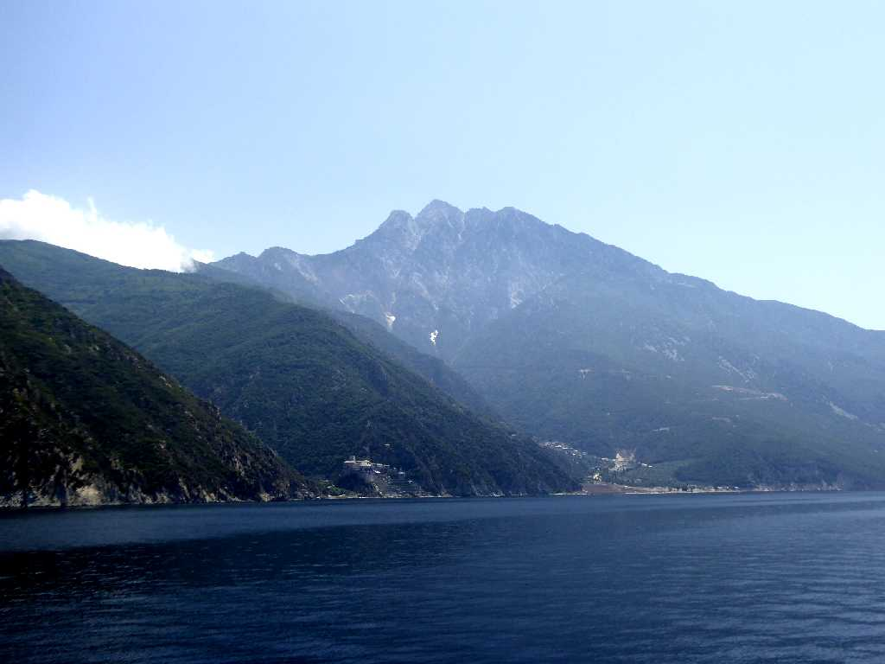
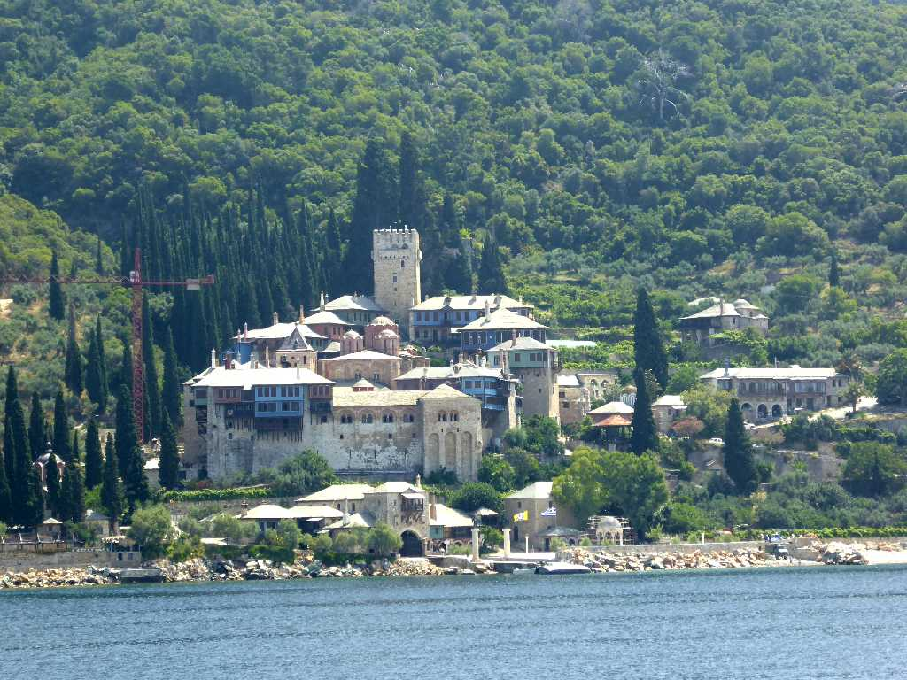
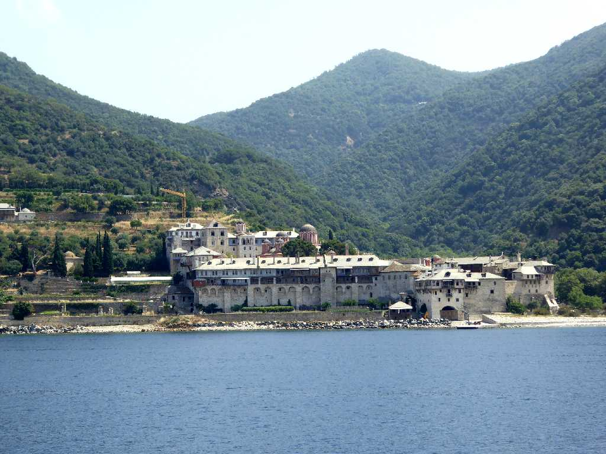
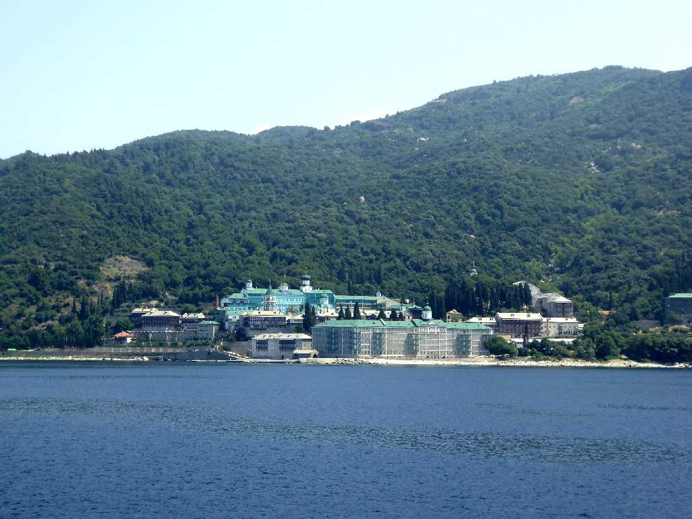
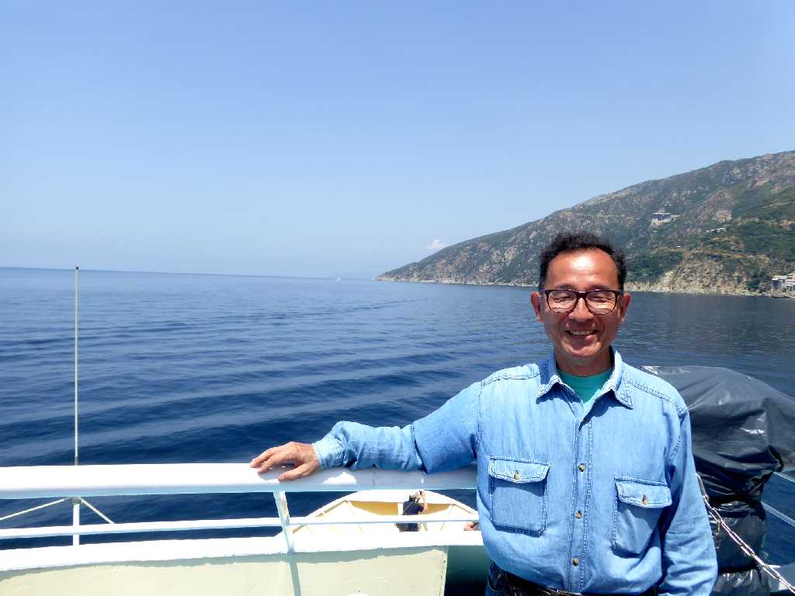

2,033m Mt. Athos
アトス半島にある聖山と云われるアトス山周辺には２０の修道院があり東方正教会の中心地である

Dochiariou Monastery
１１世紀に創られ１６世紀に建てられた主聖堂はアトス山で最大のドヒアリウ修道院

Xenophontos Monastery
１０世紀に創られたアトス山で最も大きなギリシャ正教会のクセノフォントス修道院

St. Panteleimon Monastery
１１世紀に創られ１７６５年に建て直されたロシア人修道士が運営するロシア正教会の聖パンテレイモン修道院

June 9 2018 Athos